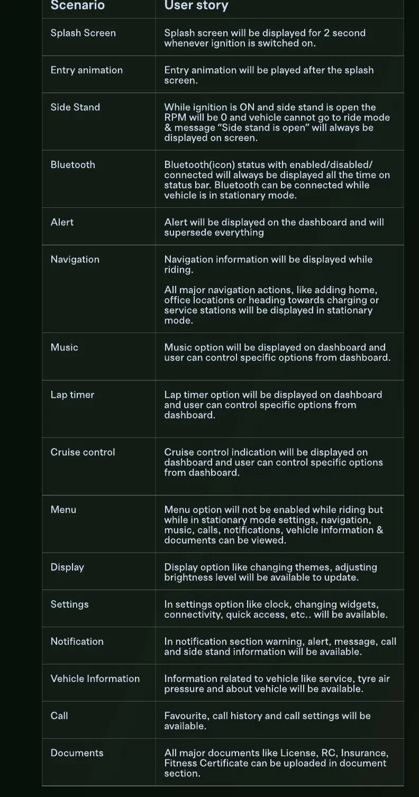
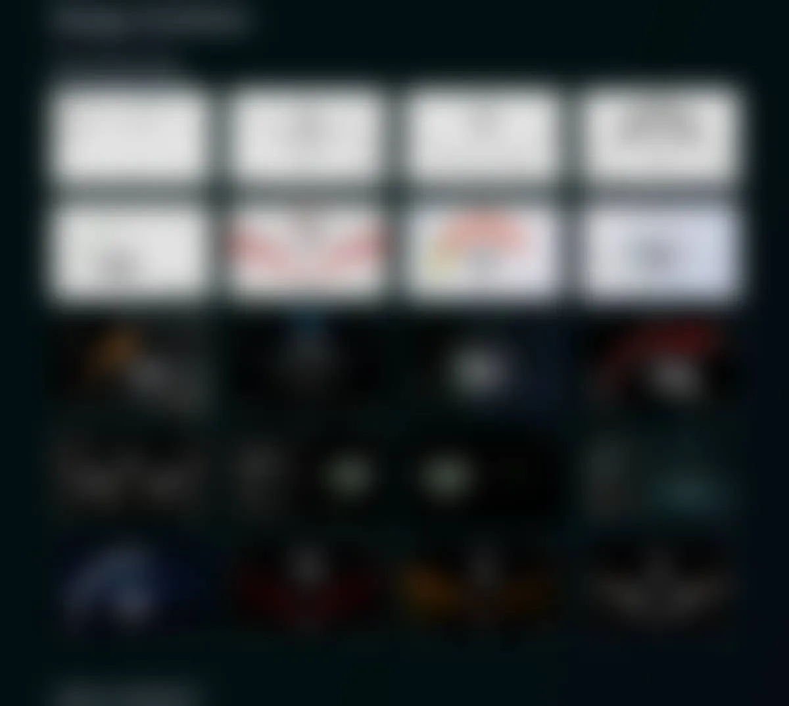
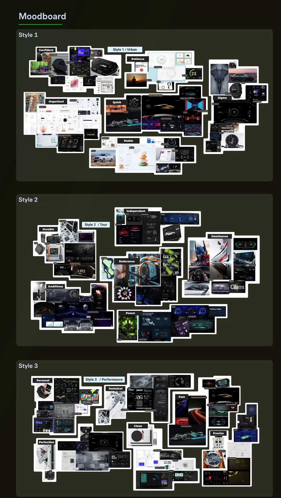
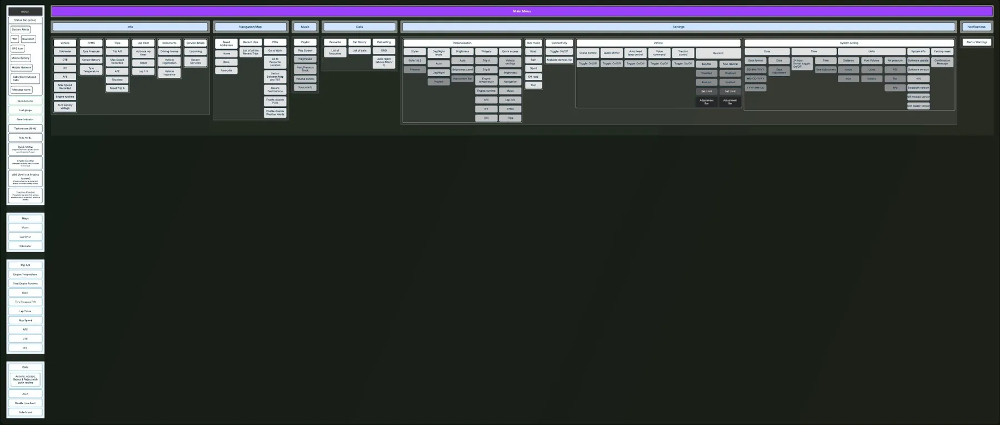
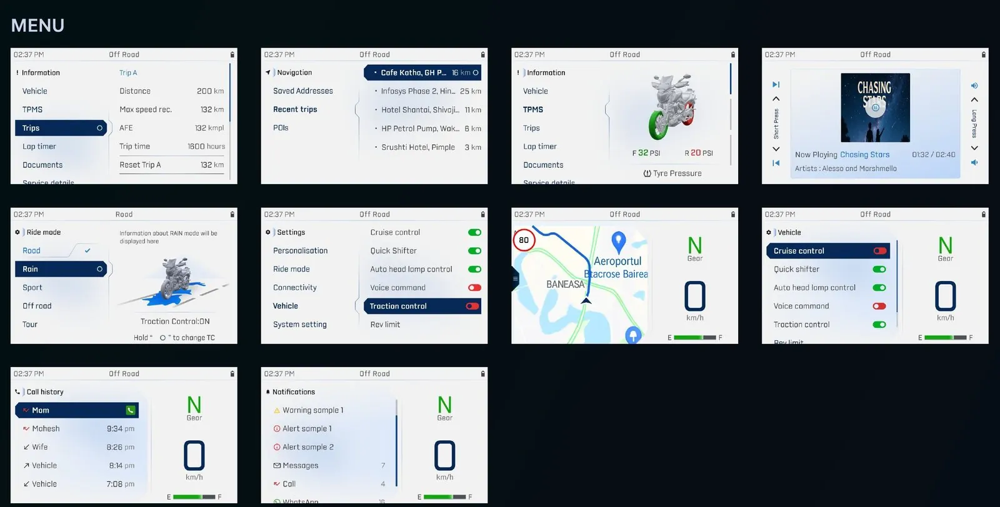
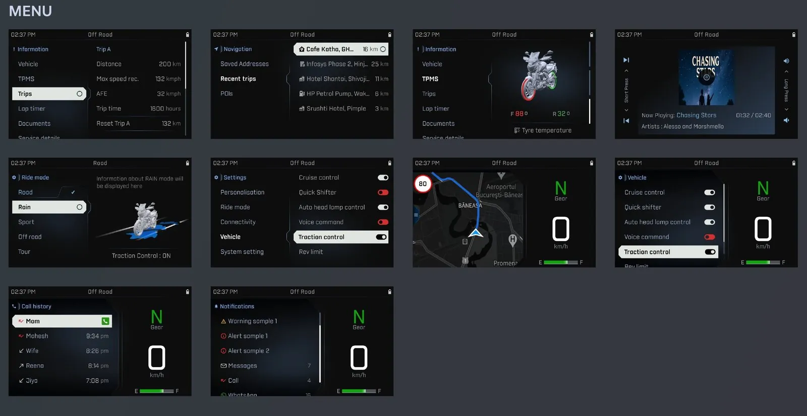
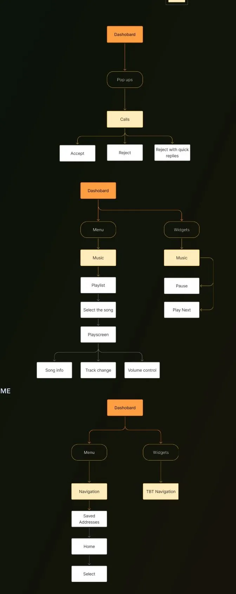
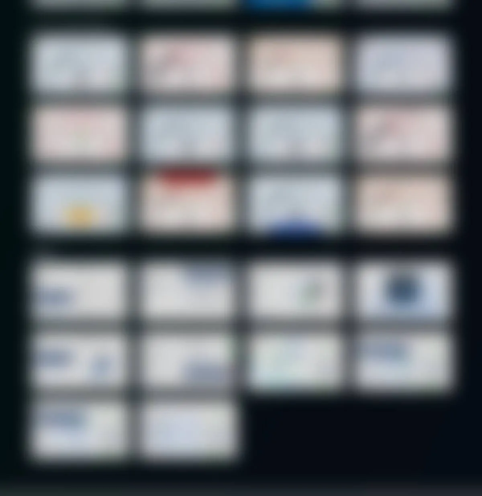
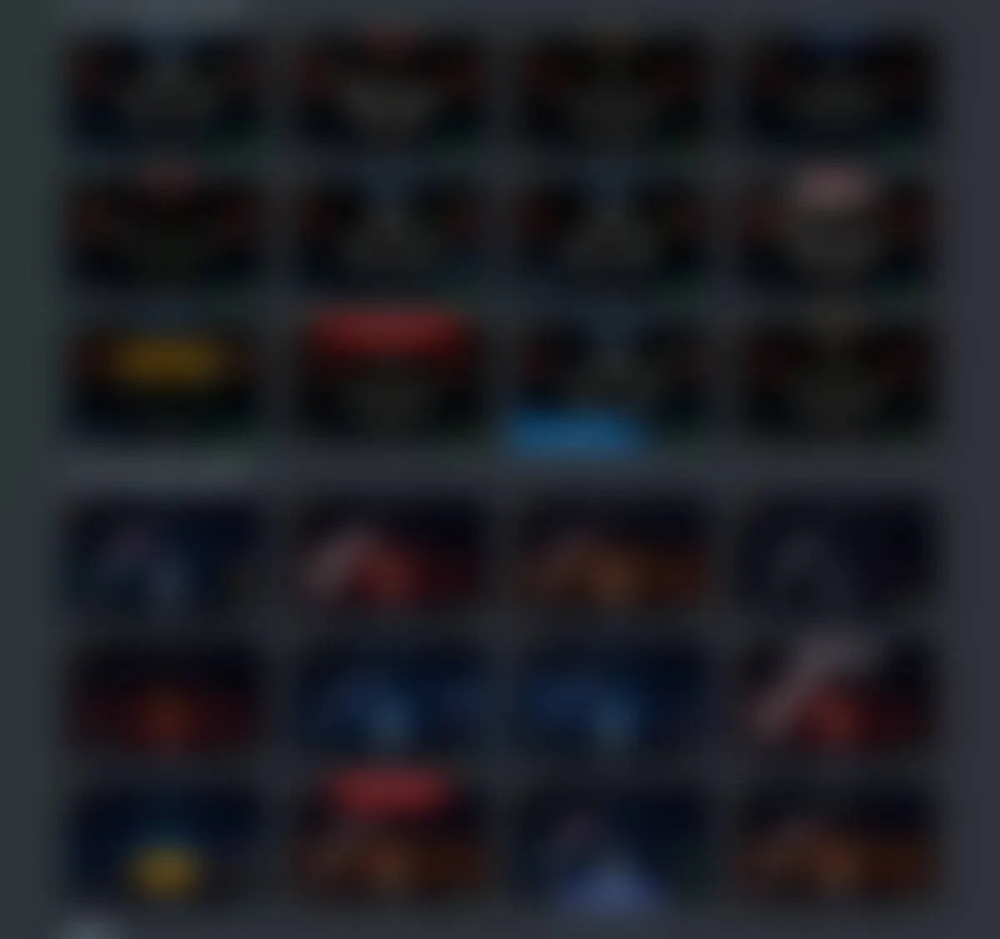
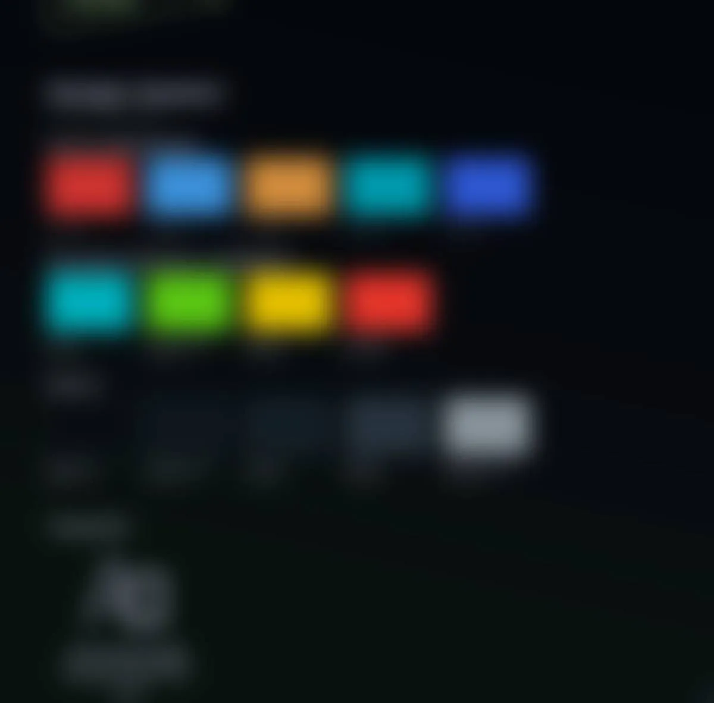

The short version
Moving Bajaj’s motorcycles from segment LCDs to colour TFT clusters.
- Problem The new 5” TFT had to add calls, music, navigation, lap timers, trip data and more, all on handlebar buttons.
- Constraint Riders said plainly they don’t want to dig through menus on the move.
- Brief Bajaj ran two design teams in parallel. Mine was asked for a modern visual theme and a complete menu architecture.
- Outcome Our menu structure and navigation shipped first on the Pulsar N160 SS in 2026.
My part I led a team of 4 designers from research to handoff and owned the information architecture and navigation model, the part that shipped.
What made it hard
- A colour screen can show far more than a rider can safely read. Every feature on the list wanted space, and none of them could invite a long look.
- Handlebar buttons on a vibrating motorcycle. The inputs had to be tactile and meet OEM vibration-tolerance standards.
- Riders don’t want menus while riding. One persona put it as “He doesn’t want to navigate through complicated menus while on the move.” A touring rider wants speed, gear, fuel, trip and range at a glance.
- Hardware and mechanical limits. That is why we ran workshops on site with Bajaj’s engineering team.
- A second team was proposing something different, so ours had to hold up next to another architecture.
How my thinking changed along the way
Riding and stopping are two different jobs
We split the system into what you see while riding and what you change while stopped. The menu is disabled while riding, and when the bike is stationary it opens to settings, navigation, music, calls, notifications, vehicle information and documents. Nothing on screen should invite a long look at speed. The cost is that riders can’t change settings on the move.
The phone is the reason to pair, so it needed a riding path
Riders sync their phone mainly for navigation, call alerts and music, and expect it “without causing distractions”. So a menu entry wasn’t enough. Each phone feature got a short riding path through dashboard widgets and a full path through the menu. Music is widget, then pause or next track, versus menu, then playlist, then song. Navigation is widget, then turn-by-turn, versus menu, then saved addresses, then home. The trade-off is two entry points per feature to design, build and keep consistent.
Safety states override everything
Side-stand status, warnings and system alerts matter more than anything the rider chose to show, so we set a fixed priority order. Alerts take over any screen. With the side stand open, RPM stays at 0, the bike can’t enter ride mode, and “Side stand is open” stays on screen. Calls can be auto-rejected or silenced above 80 km/h. The cluster stays predictable because the most important message always wins. Some calls go unanswered while riding fast, and I accepted that.
Going past the brief on the prototype
Transitions and an interactive prototype weren’t in scope. We built them in Figma anyway, frame by frame, so engineers could build every state transition. We worked in parallel with Bajaj’s developers to get every frame right and matched to what they could build.
What we left out, on purpose
We began with user stories and a scenario table that defined how each screen should behave. We also explored layouts and made moodboards for three directions: urban, tour and performance. The boards below show that early work.
User stories, explorations and research



What riders see
The menu system is public on the Pulsar N160 SS, so it is shown in full along with the information architecture and screen flows. The unreleased modern visual theme is Bajaj Auto’s intellectual property and stays blurred.







What happened after launch
- In production: the menu structure, navigation and architecture are on the Pulsar N160 SS and its 5” TFT console, launched in August 2026 (launch report), and are coming to more Bajaj models.
- Ours won over a competing design. A second team proposed a different architecture, and Bajaj chose ours for its ease of access.
- Our visual theme didn’t ship. Bajaj’s design head appreciated and approved our modern design, but the board chose a more traditional look from the other team.
- The prototype was built with the developers: frame-by-frame transitions in Figma, matched to what Bajaj’s developers could build.
More Bajaj work
The cluster was the second of my three engagements with Bajaj. The first (2023) was the Mera Bajaj app, followed by the Chetak EV display. The third was a UI revamp of the Chetak EV owner app, which took 2 to 4 weeks (Dec 2025 to Jan 2026).
What didn’t go to plan
Our visual theme never shipped. The design head approved it, but the board chose a more traditional look, so our modern theme remains unreleased.
We worked only with Bajaj’s designers and developers, and never with the board that made the final call. The reasoning behind the design had to travel up without us.
The architecture itself carries trade-offs we chose knowingly: no settings changes on the move, two entry points for every phone feature, and some calls going unanswered at speed.
What I’d do next
The architecture outlived the visuals. How riders find and control everything shipped, and our modern theme didn’t, even with the design head’s support.
Next time I would push to reach the decision makers early, understand what they want, and present the design to them myself, so the reasoning isn’t lost on the way up.